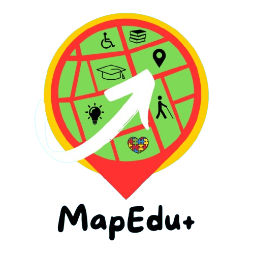

Educação inclusiva
MapEdu+
Plataforma colaborativa que mapeia instituições de ensino com estruturas e práticas inclusivas, oferecendo dados organizados para famílias e gestores.
Falar sobre parceria →A ASA CÍVICA desenvolve soluções digitais que aproximam comunidades, escolas e gestores. Criamos produtos com acessibilidade, transparência e impacto social real.
pesquisa aplicada, design inclusivo e desenvolvimento de plataformas para fortalecer a educação e a cidadania.
Conheça algumas iniciativas que estamos desenvolvendo com parceiros e comunidades.
Plataforma colaborativa que mapeia instituições de ensino com estruturas e práticas inclusivas, oferecendo dados organizados para famílias e gestores.
Falar sobre parceria →O que podemos fazer junto com sua instituição.
Projetamos e construímos soluções web acessíveis e responsivas para educação e participação social.
Organização de dados educacionais, painéis e relatórios para apoiar decisões de gestores públicos e privados.